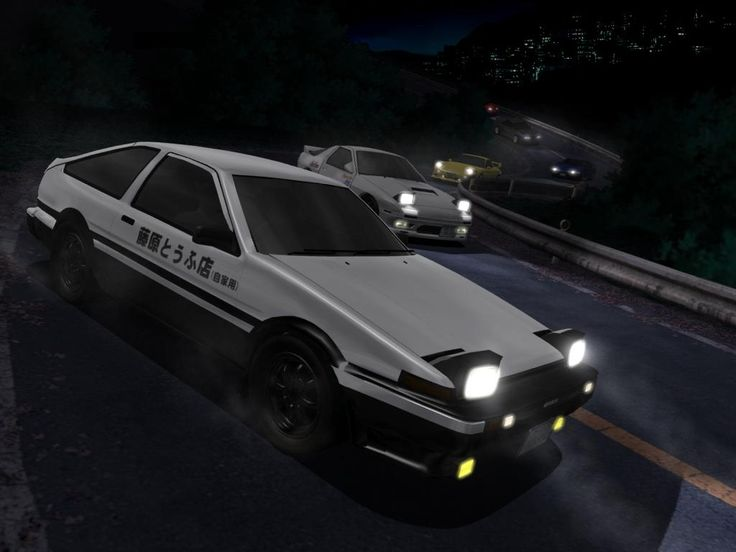
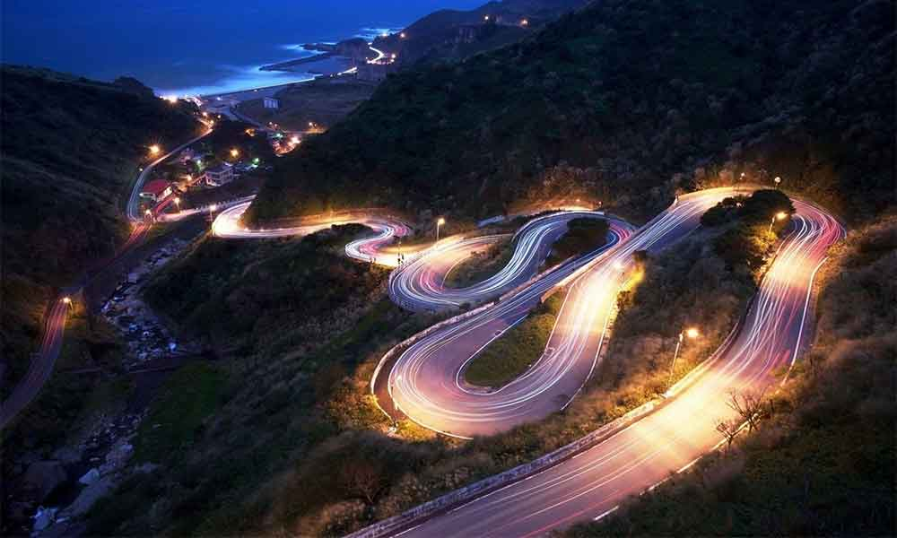
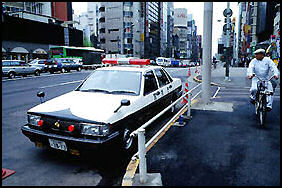

Miért fontos ez a hegy?
A japán driftelés híres a hegyvidéki utakon, ahol a szűk kanyarok és meredek lejtők ideálisak a sporthoz. Az egyik legismertebb helyszín a Mount Haruna (Haruna-yama), amely Gunma prefektúrában található. Itt, a Akina hegyén, szinte legendássá vált a Initial D animációs sorozat, amely a driftelést és a japán hegyi autózást népszerűsítette.


A Haruna-hegy kanyargós útjai tökéletes terepet biztosítottak a versenyekhez.
A japán hegyi driftelés kultúrája az 1980-as és 1990-es években virágzott fel, és részben azért tudott kialakulni, mert a rendőrség sokáig nem tudta vagy nem akarta teljes mértékben felszámolni ezt az underground tevékenységet.
